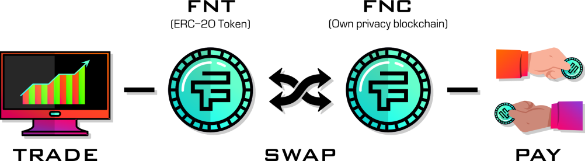
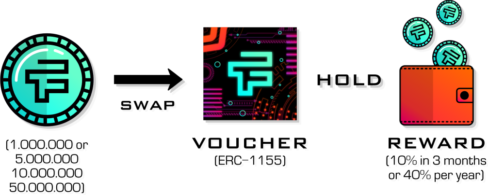

<div class="article__container">
    <div class="article__about">
      <div class="article__about__title">
        <h3>about</h3>
      </div>
      <div class="article__about__header">
        <div class="article__about__header-first">
          <p class="about__header__description">The
            <span class="about__header__description-uppercase">first chain</span> is an erc-20 token located on the Ethereum blockchain, convenient and familiar to use by all of us, whether you are a user or a developer.</p>
        </div>
        <div class="article__about__header-second">
          <p class="about__header__description">The
            <span class="about__header__description-uppercase">second chain</span> is the Falcon blockchain, which allows optional anonymous transactions.</p>
        </div>
      </div>
      <div class="article__about__header__image">
        
      </div>
      <div class="article__about__header-article">
        <p class="about__article__text">
          By linking the two together, Falcon Project offers its users the right to choose what suits them best at the moment: speed and convenience or anonymity and privacy. This approach works on the principle of free exchange of a token for
          a coin in a 1: 1 ratio through a constantly available swap form on our official<a href="http://t.me/Falcon_swap_bot"> telegram-bot</a> channel. In this way you will always be able to exercise your right to completely confidential
          transactions using the Falcon coin when you need it. And in all other cases, just use the convenient Falcon token, which will be traded on all available exchanges. Simple, easy and convenient!
        </p>
        <p class="about__article__text">Falcon Project is a complete ecosystem, not just a token, coin, or DEX.</p>
      </div>
      <div class="article__about__footer">
        <div class="article__about__footer-reward">
          <div class="reward__title">
            <h4>Unique reward system.</h4>
          </div>
          <p class="about__footer__description">
            The reward system for Falcon token holders is very interesting and unique. Anyone who has a deposit of at least 1,000,000 Falcon tokens or a multiple of them can exchange their tokens for an ERC-1155 voucher, equivalent to the
            amount he wants to freeze to receive HOLD awards in the amount of 10% once a quarter (3 months), which together makes up a return of 40% per annum.
          </p>
        </div>
        <div class="article__about__footer-image">
          
        </div>
        <div class="article__about__footer-important">
          <p><span class="about__header__description-uppercase">Important! </span> The number of vouchers will be limited to the issue of 5,000,000,000 (five billion) tokens, which is 33% of the total starting issue of the Falcon token. Given
            the wide demand for this reward system, the number of tokens frozen in vouchers will be increased using tokens in the freeze fund. In this case, the percentage of remuneration will decrease over time.</p>
        </div>
      </div>
    </div>
  </div>